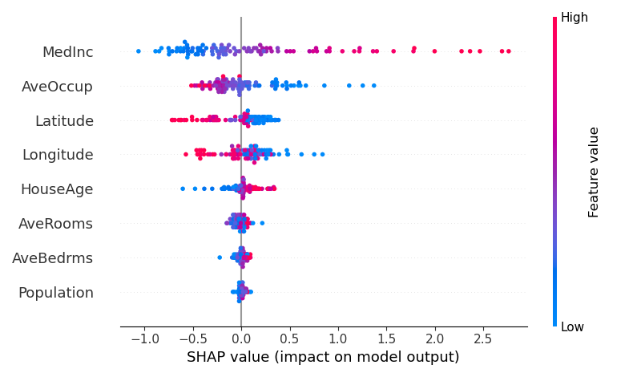
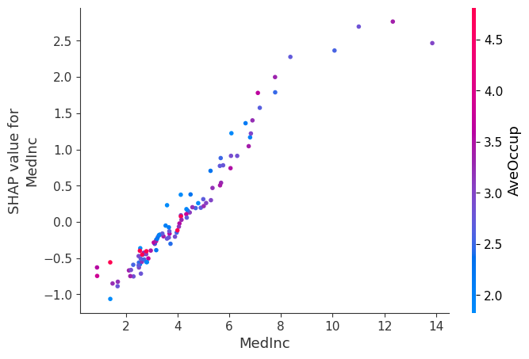
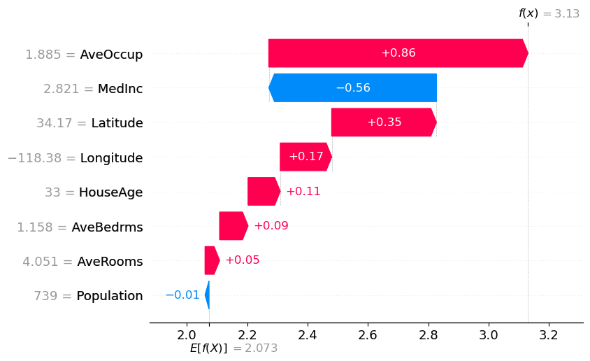

Understanding Feature Importance in Machine Learning
Insights from the California Housing Dataset
1 Abstract
Feature importance is a critical tool for making machine learning models interpretable and actionable. This blog explores the concept through a case study using the California Housing dataset, demonstrating techniques like Random Forest feature importance and SHAP values. With clear visualizations, including heatmaps, bar charts, and SHAP plots, this blog provides practical insights for understanding the drivers behind predictions and building trust in machine learning systems.

2 Introduction
In the fast-evolving field of machine learning, understanding how models make predictions is just as important as achieving high accuracy. This is where feature importance becomes a critical tool. Feature importance answers questions like:
- Which features contribute most to a model’s predictions?
- How can we ensure our models are interpretable and fair?
- What insights can we extract about the data itself?
As a machine learning enthusiast, I vividly remember the class where we explored feature importance. It was an eye-opening session that demonstrated how interpretability can enhance the trustworthiness and effectiveness of machine learning systems. This blog dives into the concept of feature importance, illustrating its application with the California housing dataset.
3 Why Does Feature Importance Matter?
Feature importance isn’t just a technical metric; it’s a cornerstone of responsible AI development. Here’s why it matters:
- Trust and Transparency: Explaining model predictions builds trust with stakeholders and users.
- Model Debugging: Identifying irrelevant or misleading features can guide data preprocessing and improve performance.
- Fairness: Highlighting influential features can reveal potential biases in the data or model.
- Actionable Insights: Feature importance often provides domain-specific insights, aiding decision-making.
These benefits make it a must-have tool for machine learning practitioners and engineers.
4 A Case Study: The California Housing Dataset
To demonstrate feature importance in action, I analyzed the California housing dataset. This dataset predicts housing prices (MedInc) based on features like population, house age, and geographic data.
Let’s walk through the steps.
4.1 1. Correlation Heatmap
Before diving into feature importance, I visualized the feature correlations to understand relationships in the data. The heatmap below reveals some interesting patterns:
AveRoomsandAveBedrmsare strongly correlated (r = 0.85), indicating potential redundancy.- Geographic features like
LatitudeandLongitudeare also highly related, which is expected given the dataset’s regional nature.

Understanding these correlations is crucial, as it helps identify multicollinearity, which can influence model interpretation.
4.2 2. Feature Importance with Random Forest
Next, I trained a Random Forest model and computed feature importance scores. Random Forest is a versatile algorithm that naturally provides feature importance based on tree splits. The bar chart below highlights the most influential features:
MedInc(Median Income) dominates as the most important feature, which makes sense since income levels often correlate strongly with housing prices.AveOccup(average occupants per household) andLatitudealso show significant influence.

This global view of feature importance provides a solid understanding of which features matter most to the model.
4.3 3. SHAP: A Deeper Dive Into Explainability
SHAP (SHapley Additive exPlanations) takes feature importance a step further by quantifying each feature’s contribution to individual predictions. This local interpretability is invaluable for understanding edge cases.
The SHAP summary plot below illustrates:
- High
MedIncvalues positively influence predictions, significantly increasing housing prices. - Features like
LatitudeandAveOccupalso play key roles but show varying impacts depending on their values.

SHAP allows us to zoom into individual predictions, making it an excellent tool for debugging and fairness analysis.
SHAP Dependence Plot
To understand feature interactions, I plotted a SHAP dependence plot below which highlights how MedInc strongly influences predictions. The SHAP values for MedInc increase with its value, showing its positive impact on housing price predictions. The color gradient represents AveOccup, revealing an additional interaction where higher AveOccup values slightly modulate the effect of MedInc.

SHAP Waterfall Plot
Finally, I used a SHAP waterfall plot to break down the prediction for a single data point. This plot shows how each feature’s SHAP value contributes to the final prediction:
MedInc contributes the most, followed by smaller contributions from Latitude and AveOccup.
The plot provides a cumulative view of feature effects, offering a detailed explanation of the model’s decision

5 Key Takeaways
Reflecting on this analysis, here are the lessons I’ve learned about feature importance:
- Understand Your Data: Tools like correlation heatmaps provide valuable insights early in the process.
- Use Multiple Methods: Combining global techniques (e.g., Random Forest) with local methods (e.g., SHAP) offers a comprehensive understanding.
- Prioritize Interpretability: Explaining model predictions builds trust and facilitates better decision-making.
For machine learning engineers, feature importance isn’t just an optional tool but it’s an essential practice that bridges the gap between model performance and real-world applicability.
6 Conclusion
Feature importance serves as a guiding light in the world of machine learning. Whether you’re building models to predict housing prices, detect fraud, or recommend products, understanding which features drive your model’s decisions is crucial. As I’ve learned from this analysis, interpretability is not a compromise but it’s a necessity for building responsible and effective AI systems.
What are your thoughts on feature importance? Have you used it in your projects? Let’s discuss in the comments!
6.0.1 References
Lundberg, S. M., & Lee, S.-I. (2017). A unified approach to interpreting model predictions. Advances in Neural Information Processing Systems.https://proceedings.neurips.cc/paper/2017/file/8a20a8621978632d76c43dfd28b67767-Paper.pdf
shap documentation: https://shap.readthedocs.io/en/latest/
Random forest documentation: https://scikit-learn.org/1.5/modules/generated/sklearn.ensemble.RandomForestClassifier.html
California Housing Dataset Available here https://www.kaggle.com/datasets/camnugent/california-housing-prices?resource=download